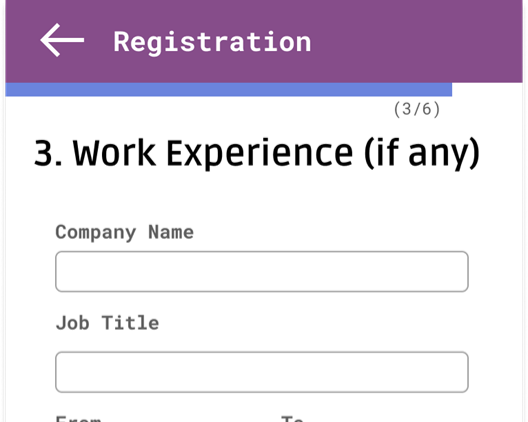
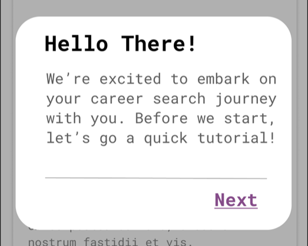
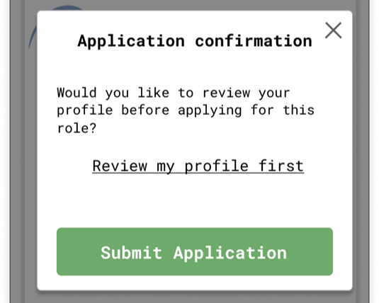
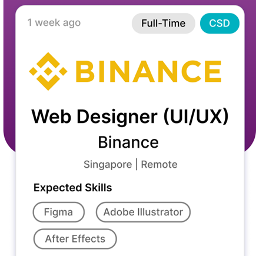
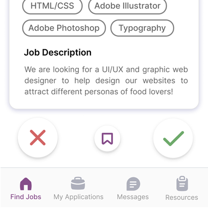
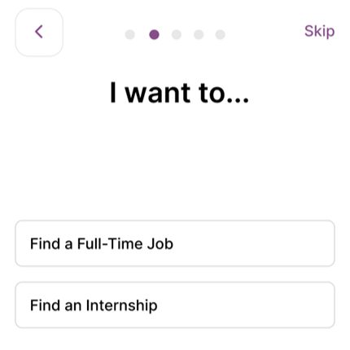
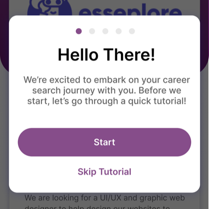
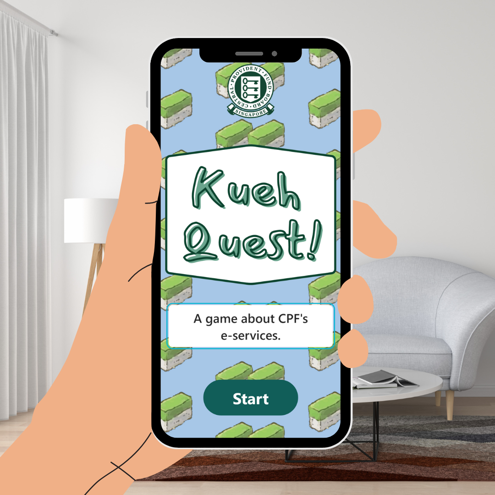

CareerSoul
A Job Search & Application Mobile App
Duration
Feb 2022 – Apr 2022
People
Team of 4
My role
User research, prototyping, user testing
Tools used
Figma, Google Forms
Project summary
As a student in SUTD's undergraduate module 50.006 User Interface Design and Implementation, my team was tasked to work in groups to improve the digital user experience of a certain task.
My group chose the task of job hunting. The process started from user research and ideation, and ended with the creation of a prototype that was tested with a qualitative & quantitative user study.

The problem
Job-hunting can be a tedious and stressful task, especially for university students sourcing for internships and full-time roles.
With multiple aspects to take into consideration — from finding suitable roles for their profile, to writing cover letters and resumes, to long waits for replies from recruiters — this piles onto their already hectic, busy schedules.
The question arises: is there a way to make the job search process a more efficient and pleasant experience?
Solution
Our team designed CareerSoul, a job search mobile app that allows users to apply for jobs with a single swipe.
With our target user demographic being young adults in their early career journey, we took inspiration from the design of dating apps like Tinder, using "swiping" as the mechanism for applying for a job. Through this, the app aims to make job searching faster, easier and more personalised.
Features
The process
1. Empathise
Online survey
In order to better understand our users and put ourselves in their shoes, my project team conducted an online survey amongst SUTD students to learn more about their wants and needs, user habits, and pain-points with regards to job hunting.
The form consisted of:
- Multiple choice questions regarding their past job applications (e.g. platform used, difficulties faced)
- Ordinal scale questions regarding their confidence level for various application requirements (e.g. resume writing, interview preparation)
- Open-ended questions regarding their general concerns about job hunting
Results
The survey received 42 responses, consisting of an even mix of students and alumni. We identified the following three recurring pain points:
Tedious search
Considerable effort to find suitable job openings matching their interests and capabilities — filters, search-terms, lengthy job descriptions.
Unresponsive recruiters
A lack of response from recruiters was a common frustration — most users value a reply even if it's unfavourable.
Overwhelming preparation
Uploading customised cover letters and resumes for each role applied was a tedious task for most respondents.
We also noted a high proportion of those with no career/internship experience found a lack of personal connections a major concern — preferring to ask seniors and peers for career-related guidance, hinting that those early in their career search value having a network of connections to help them in the process.
2. Define
Personas
We wanted to form a deeper understanding of our users'goals, needs, experiences, and behaviors. So we created three personas for each of our user segments based on our collected insights, updating them throughout the project as we gathered more data. We used these personas whenever we wanted to step out of ourselves and reconsider our initial ideas.
3. Ideate
With our user needs in mind, the team brainstormed possible solutions, thinking about how we could come up with a fresh, unique, and effective take on online job searching.
Design inspiration
In my research, I came across a Bloomberg article noting the parallels between online dating and job-hunting. I presented this to my team and we decided to use the design of dating apps as inspiration for our solution, adopting features such as "swiping" and "profile matches" — but this time for job applications rather than potential dates.
Competitive analysis
Upon further research, we found existing apps incorporating the dating-app design, such as Blonk and Switch.
While these apps also aimed to provide a faster job search and application process through "swipes" and "profile matches," we found some areas lacking:
- The recruiter still may take a while to respond, or may not respond at all — so we adopted a Bumble-style "deadline" system for the recruiter to respond, and a chat feature that opens once a "match" is made.
- These apps didn't address the needs of Persona 3 ("The Newbie Job-Seeker") in providing accessible channels to get guidance on career-related matters — so we added career guidance resources, plus a chat feature with fellow students who've worked at companies of interest.
Scenarios
Based on our design concept, the team formulated scenarios for each of the three personas to get a better idea of how the app would work.
4. Wireframing
Low + mid fidelity iteration
After drafting rough sketches of the app screens, I guided my team to translate them onto Figma. Once the base design was achieved, we moved on to mid-fidelity wireframes to incorporate more visual appeal (fonts, colours).
One challenge was implementing the swipe functionality on Figma, which I managed to achieve after referring to online guides. In designing the job cards on the home page, we referred to current job search platforms for important details to include, as well as dating apps for the layout of information on the card.
Initial usability study
With the wireframes defined enough for testing, we conducted brief in-person usability testing sessions with 4 individual users using a think-aloud process. All 4 users found the "dating app" concept a fresh take on job-searching, and agreed it helped make the process more efficient.
Some usability issues they pointed out:

Lengthy onboarding
Some fields (e.g. "Work Experience") could be filled in later, at the user's convenience.

Absence of "skip" button
Missing skip buttons at registration/tutorial pages did not provide user control and freedom.

Lack of visual feedback
Needed a clearer sign (e.g. a pop-up) to confirm an application was sent successfully.
High-fidelity prototype
In creating our high-fidelity prototype, we ensured to always refer back to our user needs as well as feedback gained from the previous usability testing sessions done.
Try the prototype
Feel free to explore our prototype!Throughout the prototyping process, my team made sure to adhere to the 10 Usability Heuristics for User Interface Design, for instance:

Aesthetic and minimalist design
Content and visual design focused on essentials, suppporting the user's primary goals of job search and application.

Consistency and standards
Internal visual consistency (e.g. fonts and color scheme); external consistency by following industry conventions (e.g. 'swipe right' to view next card).

Visibility of system status
Appropriate visual feedback e.g. progress bars during on-boarding and message pop-ups upon successful application.

Help and documentation
Concise and concrete in-app tutorials are provided to help with the user's task.
5. Testing
With the high-fidelity prototype, my team conducted a qualitative user study plus a follow-up quantitative survey.
Qualitative user study
We conducted an in-person qualitative think-aloud study with follow-up interviews, involving 5 participants, to test CareerSoul's effectiveness, efficiency and usability.
Preparation
Our team came up with a hypothesis for each feature and constructed user tasks and interview questions that would help test these hypotheses.
Think-aloud process
Next, we asked the participants to carry out these tasks, encouraging them to say whatever went through their heads. We wrote down our observations and interviewed them afterwards.
All participants felt that:
- CareerSoul makes job hunting more efficient
- The interface was easy to use and understand
- Careersoul provided a more pleasant job search experience
Quantitative evaluation
After the qualitative session, each participant completed a post-testing feedback survey using the System Usability Scale (SUS).
Scores for the 5 respondents were 72, 75, 80, 95 and 100 — all falling within the "Good" and "Excellent" categories, indicating minimal usability issues and that the app successfully helped users achieve their goals.
From these results, our team concluded that CareerSoul:
✅ Is effective and efficient in achieving user objectives
✅ Provides a satisfactory user experience
✅ Has minimal usability issues
Future work
While we deem our final prototype successful based on the qualitative and quantitative analysis, it can still be improved. Based on user feedback and evaluation within the team, some areas of exploration are:
Multiple user profiles
To let users maintain different profiles for roles of different nature or sector, without constant edits.
Display company reviews
Suggested by participants, to help applicants make a more informed decision.
Recruiter-side flow
Our project mainly focused on the job applicant's point of view — the recruiter's view was untested.
Reflection
With 3 months to complete the research, design, testing, and preparation of project reports and presentations (plus other college courses running concurrently), it was a race against time from the start. However, I'm immensely pleased with the outcome and the effort my team put in — especially after hearing good feedback on our prototype.
See more of my work:

Kueh Quest! (2022)